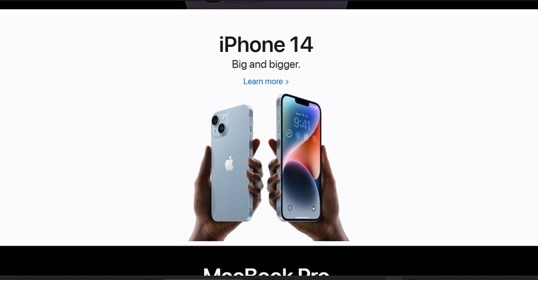

Style Guide

i played around with the different font and i really liked new roman times so i decided to use it. It gave of a very fantasy and a vibe that reminded me of "TYPO" so i felt like it fit well. i tried to emulate the website of apple becaus ei liked the aethetic feel and th esections that it used in order to make the website feel professionally done.

This website is meant to be professiobal and look similar to a gallery as is the intention of the background. I took the model of the apple website and molded it to fit my expertise and theme and i think i did a great job of displayinging this. The colors and theme really bleeds through the experience and theme is constantly present throughout the website.
